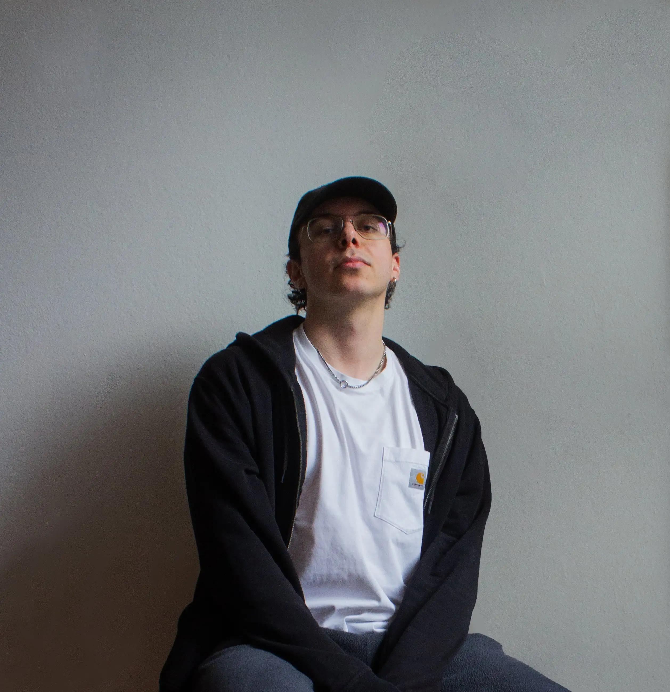

My practice focuses on building visual structures that organize content across contexts. I’m focused on how design shapes perception through typography, rhythm, and composition, balancing precision with flexibility.
My background in graphic design and my studies at SUPSI in Mendrisio have led me to work across different scales and formats. I tend to approach projects as systems rather than isolated outcomes, adapting structures instead of fixed solutions.
Artificial intelligence is part of my image-making practice, explored as a tool that can shape visual language while maintaining control over the result. Photography also plays a role in this process, both as personal research and as a source of original material for broader systems.
I approach each project by defining structure and intention, aiming to create work that is clear, consistent, and able to evolve over time.

© 2026 — luca dell’agostino